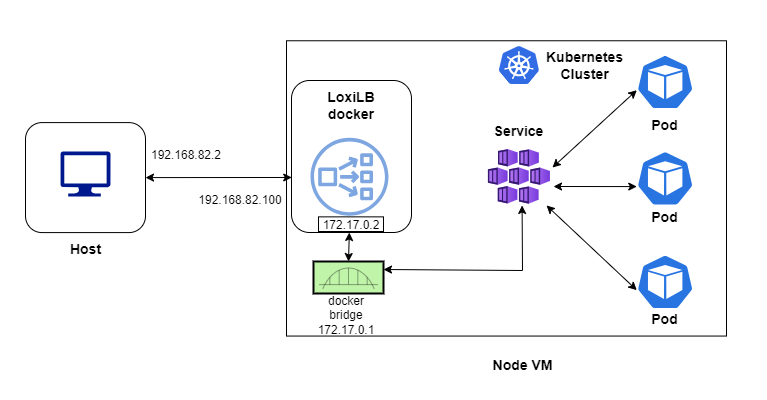

LoxiLB Quick Start Guide with K3s/Flannel
This document will explain how to install a K3s cluster with default flannel networking and loxilb as an external load balancer.
Prerequisite
Install docker runtime to manage loxilb.
Topology
For quickly bringing up loxilb with K3s/Flannel, we will be deploying all components in a single node :

loxilb is run as a docker and will use macvlan for the incoming traffic. This is to mimic a topology close to cloud-hosted k8s where LB nodes run outside a cluster. loxilb can be used in more complex in-cluster mode as well, but not used here for simplicity.
Install loxilb docker
## Set underlying interface of the VM/cluster-node to promisc mode for mac-vlan to work
sudo ifconfig eth1 promisc
## Run loxilb
sudo docker run -u root --cap-add SYS_ADMIN --restart unless-stopped --privileged --entrypoint /root/loxilb-io/loxilb/loxilb -dit -v /dev/log:/dev/log --name loxilb ghcr.io/loxilb-io/loxilb:latest
# Create mac-vlan on top of underlying eth1 interface
sudo docker network create -d macvlan -o parent=eth1 --subnet 192.168.82.0/24 --gateway 192.168.82.1 --aux-address 'host=192.168.82.252' llbnet
# Assign mac-vlan to loxilb docker with specified IP (which will be used as LB VIP)
# Please note that this node should already have an IP assigned belonging to the same subnet on underlying interface
sudo docker network connect llbnet loxilb --ip=192.168.82.100
# Add iptables rule to allow traffic from source/host IP(192.168.82.1) to loxilb
sudo iptables -A DOCKER -s 192.168.82.1 -j ACCEPT
All the above steps related to docker setup can be further automated using docker-compose.
Setup K3s/Flannel
#K3s installation
curl -sfL https://get.k3s.io | INSTALL_K3S_EXEC="server --disable traefik --disable servicelb --disable-cloud-controller --kube-proxy-arg metrics-bind-address=0.0.0.0 --kubelet-arg cloud-provider=external" K3S_KUBECONFIG_MODE="644" sh -
# Remove taints in k3s if any (usually happens if started without cloud-manager)
sudo kubectl taint nodes --all node.cloudprovider.kubernetes.io/uninitialized=false:NoSchedule-
How to deploy kube-loxilb ?
kube-loxilb is used to deploy loxilb with Kubernetes.
wget https://raw.githubusercontent.com/loxilb-io/kube-loxilb/main/manifest/ext-cluster/kube-loxilb.yaml
kube-loxilb.yaml
args:
- --loxiURL=http://172.17.0.2:11111
- --externalCIDR=192.168.82.100/32
- --setMode=1
In the above snippet, loxiURL uses docker interface IP of loxilb, which can be different for each setup.
Apply in k8s:
kubectl apply -f kube-loxilb.yaml
Create the service
kubectl apply -f https://raw.githubusercontent.com/loxilb-io/loxilb/main/cicd/docker-k3s-cilium/tcp-svc-lb.yml
Check the status
In k3s:
kubectl get svc
NAME TYPE CLUSTER-IP EXTERNAL-IP PORT(S) AGE
kubernetes ClusterIP 10.43.0.1 <none> 443/TCP 80m
tcp-lb-onearm LoadBalancer 10.43.183.123 llb-192.168.82.100 56002:30001/TCP 6m50s
In loxilb docker:
$ sudo docker exec -it loxilb loxicmd get lb -o wide
| EXT IP | SEC IPS | PORT | PROTO | NAME | MARK | SEL | MODE | ENDPOINT | EPORT | WEIGHT | STATE | COUNTERS |
|----------------|---------|-------|-------|-----------------------|------|-----|--------|-----------|-------|--------|--------|----------|
| 192.168.82.100 | | 56002 | tcp | default_tcp-lb-onearm | 0 | rr | onearm | 10.0.2.15 | 30001 | 1 | active | 12:880 |
Connect from host/client
$ curl http://192.168.82.100:56002
<!DOCTYPE html>
<html>
<head>
<title>Welcome to nginx!</title>
<style>
html { color-scheme: light dark; }
body { width: 35em; margin: 0 auto;
font-family: Tahoma, Verdana, Arial, sans-serif; }
</style>
</head>
<body>
<h1>Welcome to nginx!</h1>
<p>If you see this page, the nginx web server is successfully installed and
working. Further configuration is required.</p>
<p>For online documentation and support please refer to
<a href="http://nginx.org/">nginx.org</a>.<br/>
Commercial support is available at
<a href="http://nginx.com/">nginx.com</a>.</p>
<p><em>Thank you for using nginx.</em></p>
</body>
</html>